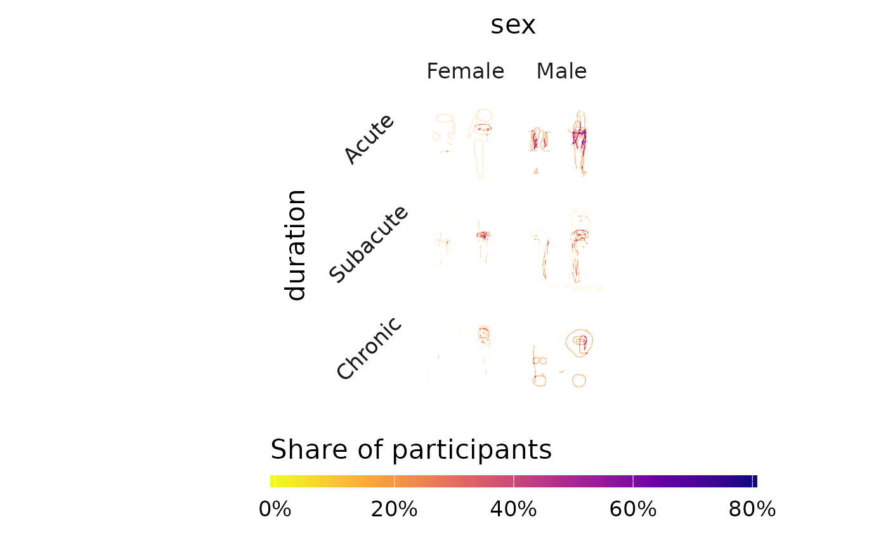
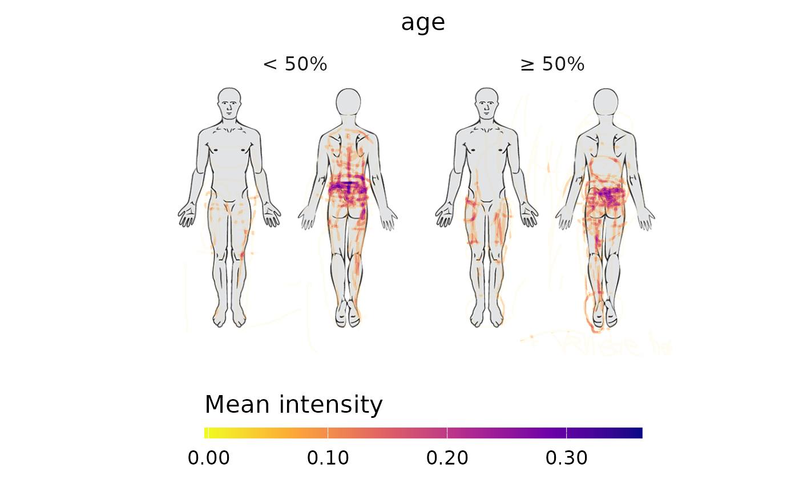

Plot a pain heatmap from rendered RGBA rasters
Source:R/pdr_plot_rgba_heatmap.R
pdr_plot_rgba_heatmap.RdCreates faceted heatmaps showing how pain location patterns vary across one
or two stratification variables. The function works on the rendered .rgba
rasters added by pdr_add_rgba(). Each drawing is reduced to its
alpha channel, drawings are summed pixel-wise within each group, and the sum
is divided by the number of drawings in the group. Because every group is
expressed relative to its own size, groups of very different sizes can be
compared directly and no balancing/downsampling is needed.
Arguments
- .data
A pdr_tibble (see
pdr_match()) where each pdr_drawing contains an.rgbaelement (seepdr_add_rgba()). All drawings must share the same canvas dimensions (.widthand.height). Any additional columns (e.g. grouping variables such assexorage) are preserved and available viavariables.- pdr_col
The pdr_list column in
.dataholding the pain drawings (tidy-eval, unquoted). Defaults topdr_data.- variables
Character vector of length 1 or 2 specifying the grouping variable names present in
.data. Numeric variables are binned into quantile groups; categorical variables use their existing levels. UseNAin either position to leave that faceting dimension empty. Defaults toc(NA, NA), producing a single unfaceted heatmap.- n_groups
Integer. For numeric variables, the number of quantile bins to create. A single value is recycled across
variables; supply a vector of length 2 for different bin counts. Ignored for factor or character variables. Default is2.- value
Character. How each drawing's alpha channel contributes to the heatmap:
"binary"(default) — every pixel with alpha abovealpha_thresholdcounts as 1. The heatmap shows the share of participants who marked each pixel."mean"— pixels abovealpha_thresholdkeep their alpha value. The heatmap shows the mean alpha per pixel across all drawings in the group. Drawings that did not mark a pixel count as 0, so the value reflects both how many participants marked the pixel and how densely they drew there.
- alpha_threshold
Numeric in
[0, 1). Pixels with alpha less than or equal to this value are set to 0 before summing. The default0.05removes most of the anti-aliased fringe around strokes (pixels only partially covered by a stroke) while keeping pixels that are at least roughly half covered by a stroke with.alpha = 0.1. A warning is given if the threshold is above half of the lowest stroke.alphain the data, as real strokes may then be removed.- background_image
Optional background image displayed behind the heatmap. See
pdr_plot_rgba(). Defaults toNULL(no background).- alpha_scale
Numeric vector of length 2 giving the opacity range
c(min, max). Cells with value 0 getminand cells at the scale maximum getmax;alpha_curvecontrols the shape in between. Pass two equal values for constant opacity. Defaults toc(0, 1). Aminabove 0 gives every marked pixel, including those marked by a single participant, a visible floor and works against the S-curve.- alpha_curve
Numeric of length 1 or 2,
c(steepness, midpoint), controlling how heatmap values are mapped to opacity withinalpha_scale.Steepness controls how S-shaped the mapping is. Higher values fade low values more and make high values more opaque.
The midpoint is the fraction of the scale maximum at which opacity reaches half of
alpha_scale. Lower values let moderate areas show more; higher values show only the hotspots. Moving the midpoint away from0.5bends the curve at any steepness, including1.
Defaults to
c(3, 0.25). If only a steepness is given, the midpoint is0.25, except foralpha_curve = 1, which uses0.5and gives a linear scale (equivalent toc(1, 0.5)).The colour (fill) and its legend are not affected. See Details for the formula.
- color_scale
Character or numeric. How to scale colours across facets:
"max"(default) — one common scale from 0 to the global maximum. Facets are directly comparable."facet"— each facet is divided by its own maximum, so the colour shows values relative to the hottest pixel in that facet. Facets are not comparable in absolute terms.A single numeric value — sets a fixed upper limit for the scale; values above it are shown in the top colour.
- label_format
Character. Format for the labels of numeric (quantile-binned) groups:
"pct"(default) — the quantile range as percentages, e.g."< 50%"and"≥ 50%"."num"— the observed range of the variable's values in each group."both"— both of the above, shown in the strip as markdown.
Ignored for factor or character variables.
- show_n
Logical. If
TRUE, displays the number of drawings in each facet. Default isFALSE.- strips_in_markdown
Logical. If
TRUE(default), renders strip text usingggtext::element_markdown().
Value
A ggplot2::ggplot() object with the faceted heatmap. The first
variable in variables maps to the column facet; the second to the row
facet.
Details
The function processes data in the following steps:
Validates inputs and unpacks the
pdr_collist-column.Checks that
.rgbaexists and drops drawings whose.rgbaisNULLorNA. Drawings with an all-zero.rgba(nothing drawn) are kept and count towards the group size.Creates stratification groups (quantile bins or factor levels).
Reduces each
.rgbato its alpha channel, appliesalpha_threshold, and binarises it ifvalue = "binary".Sums the alpha matrices within each group and divides by the number of drawings in the group, giving the share of participants (
"binary") or the mean alpha ("mean") per pixel.Converts each group matrix to a long tibble of pixel cells (zero cells become
NAand are drawn transparent).Renders the heatmap with
ggplot2::geom_raster().
Opacity is mapped from each cell's value v via u = v / scale_max
(capped at 1) and
$$f(u) = \frac{u^k}{u^k + \left(\frac{m}{1-m}\right)^k (1-u)^k}$$
where k and m are the steepness and midpoint from alpha_curve. The
result is rescaled onto alpha_scale. The curve always passes through
0 at u = 0, half opacity at u = m, and full opacity at u = 1. It is
linear only with k = 1 and m = 0.5; with k = 1 and m < 0.5 it is
concave (low values boosted), with m > 0.5 convex.
The heatmap inherits the rendering choices made in pdr_add_rgba()
(e.g. polygon mode and stroke widths).
With value = "mean", note that alpha is not additive: where strokes
overlap, alpha builds up roughly as 1 - (1 - a)^k for k strokes of
alpha a. The mean alpha is therefore a measure of drawing density, not
a count of strokes.
Examples
# \donttest{
pdr_example_data |>
dplyr::mutate(pdr_data = pdr_add_rgba(pdr_data)) |>
pdr_plot_rgba_heatmap(variables = c("sex", "duration"))
#> Validating inputs...
#> `geom_path()`: Each group consists of only one observation.
#> ℹ Do you need to adjust the group aesthetic?
#> Checking .rgba data...
#> Extracting canvas dimensions...
#> Creating stratification groups...
#> Summing alpha channels per group...
#> Converting to plotting data...
#> Creating heatmap plot...
#> Done!

# Weight pixels by drawing density, stratified by quantiles of age
pdr_example_data |>
dplyr::mutate(pdr_data = pdr_add_rgba(pdr_data)) |>
pdr_plot_rgba_heatmap(
variables = "age",
value = "mean",
background_image = pdr_example_file("bg_full_body.png")
)
#> Validating inputs...
#> `geom_path()`: Each group consists of only one observation.
#> ℹ Do you need to adjust the group aesthetic?
#> Checking .rgba data...
#> Extracting canvas dimensions...
#> Creating stratification groups...
#> ℹ `age` binned into 2 quantile groups.
#> Summing alpha channels per group...
#> Converting to plotting data...
#> Creating heatmap plot...
#> Done!

# }